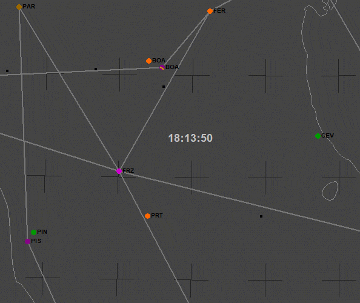
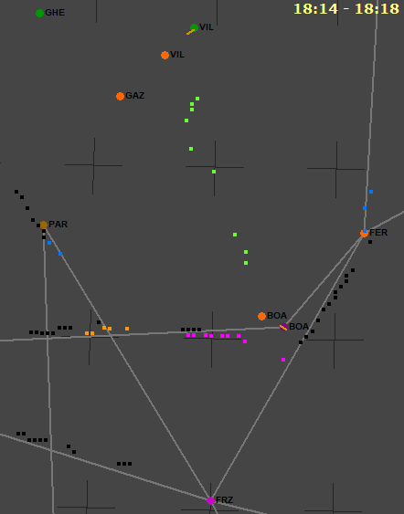
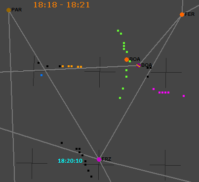
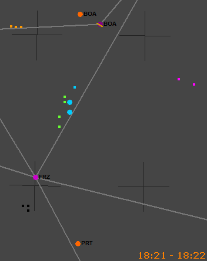
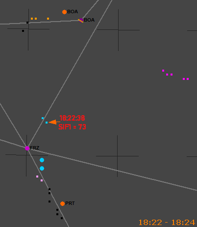

Presenza dell'AWACS
Luogo comune: nessun AWACS operava nei cieli italiani la sera della strage.
Motivazione: la presenza nella scena dell'AWACS farebbe parte di un depistaggio e di un complotto contro la NATO.
Va subito precisato che non esiste alcuna evidenza oggettiva della presenza di un AWACS durante il volo dell'IH870. Tuttavia, esistono alcuni elementi che ne rendono la presenza molto probabile o quasi necessaria per giustificare ciò che accade.
Codici transponder di modo 3/A
Prima d'iniziare ad esaminare le evidenze che possono oggettivare la presenza di almeno un AWACS nel nord Italia, cominciamo da quelle che non possono oggettivarla.
In una vecchia revisione del sito (3-gen-2022), veniva presa in considerazione la possibilità che i codici 4200 e 5400 di modo 3/A trasmessi da AA464/LL464 potessero indicare un aereo sotto vettoramento AWACS:
I codici che il TF-104G aveva impostato nel transponder (inizialmente 4200, per poi cambiare in 5400 a partire dall’avvicinamento iniziale a Grosseto) probabilmente stavano ad indicare che era vettorato da un AWACS che orbitava a distanza opportuna e tale da non dover necessariamente comparire su di uno schermo radar. Ciò si potrebbe ipotizzare (senza avere, però, alcuna certezza) consultando l'AIP del Regno Unito, sez. ENR 1.6, in cui si vede che alcuni codici (tra cui il 4200 e il 5400) vengono tutt’oggi usati per: "NATO Aircraft receiving a service from AEW aircraft" ed è possibile che tali codici venissero normalmente usati in ambito NATO, non solamente nel Regno Unito. L’AIP non è certo quello del 1980, ma forse alcuni codici del transponder sono rimasti invariati.
Brevissima parentesi in merito al TF-104G nominato nella vecchia versione della pagina che prendeva per buona l'assegnazione delle tracce LE011/AA464/LL464 fatta dai periti d'ufficio (il famoso "
volo di addestramento di una coppia di F104 atterrati in sequenza a Grosseto"), assegnazione ormai chiaramente priva di fondamento (v. "
I due F-104").
Il documento "
WP000533_001.DOC"
fonte consente di eliminare la possibilità che il codice 4200 di modo 3/A potesse indicare (in Italia) un aereo sotto vettoramento AWACS, in quanto è chiaramente riportato che quel codice era a disposizione di Roma Controllo. Quindi, AA464 era in contatto radio con l'
ATC di Roma fino a quando non ha cambiato il SIF3 in 5400.
Il significato di quest'ultimo codice può essere appreso dal documento "
WP000877_001.DOC"
fonte che, a pag. 2, riporta: "
5400 AVVICINAMENTO DI GROSSETO".
La posizione e il modo in cui LL464 cambia da 4200 a 5400 sono senz'altro compatibili con un codice assegnato da Grosseto Avvicinamento.
Un'ulteriore conferma sul codice 5400 viene dall'imputato di reato connesso Capitani Mario (controllore di Grosseto Avvicinamento), il quale
riferisce (v. pag. 99):
IMP. R.C. CAPITANI MARIO: il... noi ci mettevamo in contatto con il radar di Poggio Ballone il quale ci dava il livello per l’autori... l’attraversamento dell’aerovia e, ehm... e ci dava il codice da inserire nel transponder, che sarebbe stato questo famoso squoc 364 o 354 e così via, poteva...
Quindi, anche lui conferma che i piloti militari venivano istruiti d'inserire 5400 nel modo 3/A.
In definitiva, nessuno di questi due codici (4200 e 5400 di modo 3/A) trasmessi da AA464/LL464 possono essere attribuiti a "NATO Aircraft receiving a service from AEW aircraft".
Tracce tra Bologna e Firenze
La seguente animazione (molto velocizzata) mostra il traffico presente nel tabulato di Poggio Ballone scaricato da STRAGI80.it. L'orario è "risincronizzato" con quello di Ciampino (v.
"Affiancamento con il caccia" → "Sfasamento temporale tra Ciampino e Poggio Ballone").

Tra le varie tracce, due sono di particolare interesse per l'argomento qui trattato:
| N | Colore | NTN | SIF1 | SIF3 | Quota | GS |
| 1 | Viola | LE200/LG113 | 01 | 1020 | 25499 | 290 |
| 2 | Arancione | LE207/LG521/LE206 | 10 | 1022 | 10875 | 230 |
Entrambi gli aerei sono sicuramente militari (per la risposta del transponder di modo 1) e volano lungo l'aerovia G-7 verso est.
Inizialmente, quello viola precede l'altro di una trentina di miglia (circa 50 km), sono, cioè, separati di circa 8 minuti, ma data l'estrema variabilità della velocità riportata sui tabulati, si può ritenere che la reale separazione possa essere di circa 10 minuti, proprio come per il traffico civile. Risulta, quindi, che i due aerei si comportano come un normale traffico non operativo (sebbene militare), almeno inizialmente. Poi, nei pressi di Bologna, l'aereo viola inizia il volo fuori dalle aerovie civili, dirigendosi verso il TACAN di Cervia. Sebbene la quota riportata nel tabulato resti costante, la qualità del segnale passa da 7 (il massimo) a 5, 2, 1 e infine scompare; sembrerebbe atterrare a Cervia.
L'altro aereo si trova inizialmente al
minimo livello d'aerovia (FL 110, vola, cioè, alla quota più bassa autorizzabile per quel tratto d'aerovia), continua il volo in aerovia, comparendo a nord dell'NDB di Ferrara, lungo la A-12 verso Vicenza (non presente nell'animazione), virando, infine, a nord-est verso il TACAN di Aviano ad una quota di 8625 ft e velocità molto bassa (180/190 kn), per cui sembrerebbe che debba atterrare ad Aviano o, più probabilmente, ad Istrana (data la maggiore vicinanza ai plot).
Proviene da Genova, in direzione Firenze, a velocità moderata (330/350 kn), anche la "misteriosa" traccia LG461 (plot neri) che non trasmette alcun codice col transponder. La quota è quasi certamente inferiore ai 25000 ft, dato che i radar di Roma Controllo non lo rilevano (mentre rilevano il Fokker 28 del volo Itavia IH779 al livello di volo 250).
Anche LG461 vola in aerovia (la B-25). A 5 nm dal VORTAC di Firenze, s'immette nella A-14 mantenendo, almeno inizialmente, le 5 nm dall'asse dell'aerovia, volando proprio al limite ovest di questa (comportamento molto strano). L'aereo precede di 2 o 3 minuti il "convoglio" che sta per riversarsi nella A-14.
Per cercare di chiarire i codici di modo 1, tornano utili alcuni interrogatori.
L'imputato di reato connesso Lauretani (ascoltato più come consulente che come imputato) riferisce (v. pag. 81 della trascrizione): "un velivolo, io presumo dalla mia esperienza, cioè non ho nessun dato di fatto, un velivolo AWACS, è un velivolo di sorveglianza aerea militare, normalmente accende tutti i codici, altrimenti viene scambiato per un velivolo sconosciuto, cioè i codici militari di quel velivolo vengono evidenziati nel modo uno.".
Del Zoppo, guida caccia a Marsala all'epoca dei fatti, dichiara
fonte
davanti al giudice Priore che i SIF1 pari a 1, 10 e 20 vengono assegnati a "UK STRIKE COMMAND".
Due mesi prima (a maggio '95), egli aveva dichiarato: "il SIF 1 - 10 è riconducibile a velivoli da ricognizione, probabilmente potrebbe anche indicare l'AWACS, [...]" (v. verbale
fonte
verso la fine di pag. 3).
Il 19 maggio, fornendo ulteriori dettagli (molti ed interessanti) sull'utilizzo del transponder, dichiarava: "il 10 per l'AWACS recentemente, ma potrebbe esserlo stato anche nell'80." (v.
verbale
fonte a metà pag. 2); cioè, nei primi anni '90, il SIF1 = 10 indicava un AWACS, ma forse lo indicava anche nell'80. Come potrebbe essere diversamente? Dopotutto, il significato del modo 1 è quasi per nulla soggetto a modifiche nel corso degli anni, contrariamente a quanto accade per l'assegnazione del modo 2 (che varia in base all'aereo, al pilota e alla base d'appartenenza) e del modo 3/A (che variava ogni qualche anno a causa della crescita del traffico civile).
Da questa trascrizione di un esame dei periti del collegio Dalle Mese, risulta che il consulente Bonazzi riferisce (v. pag. 199): "nel 1980 gli I.F.F.1 uguale 10 designava l’A.W.A.C.S.".
Poco dopo, durante l'esame, il perito Donali afferma (v. pag. 201): "da quello che ricordo c’è stato riferito dagli esperti N.A.T.O. che i codici S.I.F. identificavano un A.W.A.C.S.,". Ulteriori chiarimenti vengono dati a partire dall'ultima riga di pag. 203.
Insomma, ciò che se ne può dedurre è che entrambe le tracce potrebbero rappresentare un AWACS per i codici SIF1 e quella arancione, quasi certamente lo era.
Per ciò che riguarda quota e velocità, entrambe le tracce sono certamente compatibili con un AWACS E-2C che, in questo caso, deve limitarsi a fornire solo pochi minuti d'assistenza ai due/tre aerei che confluiscono nel VORTAC di Firenze. Si veda anche E-2C/E-2C+ AIRCRAFT DESCRIPTION per ulteriori caratteristiche dell'aereo.
Il fatto di non percorrere il caratteristico circuito "a biscotto", solitamente descritto da un AWACS operativo, è utile per non destare sospetti e non implica che un AWACS non possa fornire assistenza per una decina di minuti. Tra l'altro, la velocità particolarmente bassa favorisce una maggiore permanenza in zona.
Sequenza delle azioni compiute
Al fine di oggettivare maggiormente la particolarità delle azioni compiute dai vari aerei (in particolare quelle compiute dai due possibili AWACS) in relazione alla presenza degli altri, vediamo dettagliatamente cosa accade.
Tutti i dati che seguono (velocità, rotte e distanze) sono letti direttamente dal tabulato di Poggio Ballone, senza alcun tipo di analisi aggiuntiva. Si tenga solo presente che l'orario, come già detto, è "risincronizzato" con quello dei tabulati di Ciampino.

Prima d’intercettare la rotta formata dai due radiofari VIL e BOA, LE011 (verde) sta accelerando e continua a farlo fino a raggiungere 487 kn (si tenga presente che le velocità rilevate dai radar sono sempre riferite al suolo).
La particolarità della rotta seguita da questo aereo è ampiamente spiegata nella pagina "
Presenza del MiG-23" → "Traccia LE011".
Considerando che il tabulato di Poggio Ballone elenca tutti i plot presenti nell'immagine come remoti (cioè non rilevati da Poggio Ballone, ma da un altro sito radar della catena NADGE) e che LE è l'identificativo radar di Poggio Renatico, situato a poche decine di chilometri da LE011, è lecito ipotizzare che la quota di volo fosse bassissima, data la scarsità di plot presenti, almeno fino alle 18:17:20 (terzo plot per distanza da Bologna).
Ad una decina di miglia da BOA inizia a rallentare; sono le 18:18.
In questo momento, l’aereo viola transita esattamente a sud di Bologna a 15/20 nm da LE011, mentre l’aereo arancione è ad ovest di Bologna a 20/25 nm da LE011.

I radar di Mortara e Poggio Renatico fanno buon uso dei quotametri per rilevare la quota dei due aerei (arancione e viola), mentre non sono interessati alla quota di LE011 che continua a rallentare fino a 419 kn, quando si trova circa 10 nm a sud di Bologna, alle 18:20:30.
Nel frattempo, anche l’aereo viola LE200 ha rallentato, scendendo a 269 kn alle 18:19:53.
Alle 18:20:40, l'aereo arancione (in quel momento riportato come LG521) inizia a trasmettere con SIF2 = 1000 per 24 s (due giri d'antenna).
Poi LE011 ricomincia ad accelerare e alle 18:20:50 lo troviamo a 449 kn.
Alle 18:21 circa, l’IH870 è nei pressi di Firenze [v. "
WP000172_001.DOC"
fonte].

Alle 18:21:04, ecco che compare AA464 (color ciano) a circa un paio di miglia da LE011 a ben 535 kn. LE011 ha una rotta di 185°, mentre AA464 di 195°, quindi quest’ultimo sta raggiungendo LE011 e sta convergendo verso di lui.
AA464 sta rispondendo ai radar secondari della difesa aerea sia al modo 1 con 00 che al modo 3 con 4200, mentre ha il modo 2 inibito.
L’aereo viola si trova a 20 nm dalla coppia e l’arancione a circa 16 nm. Entrambi stanno acquistando velocità, come ad indicare che se avevano qualcosa a che fare con l’entrata in formazione di AA464 e LE011, ormai lo hanno fatto.
Contemporaneamente all’aumento della velocità, sia LG521 (l’aereo arancione) che LE200 (quello viola) inibiscono le risposte del transponder al modo 1, continuando a rispondere solo al modo 3.
Alle 18:21:28, AA464 attiva anche il SIF di modo 2, rispondendo con 7777 e riduce la velocità, ma comunque è ancora una settantina di nodi più veloce di LE011, anche se ormai sono quasi attaccati (un paio di miglia), per arrivare al punto in cui il radar non riesce più a separarli.
Alle 18:21:29, AA464 compare anche sullo schermo del radar Marconi di Ciampino (non del Selenia), con il codice 4200.
Riepilogando brevemente, una volta che AA464 entra in formazione con LE011, i due aerei (arancione e viola) accelerano e disabilitano le risposte di modo 1 (che indica il tipo di missione), come per dire: "Missione compiuta! Andiamocene velocemente per la nostra strada.". È molto difficile pensare che questi due aerei non avessero nulla a che fare con gli altri. Risulta fin troppo evidente che il comportamento di questi due aerei è condizionato da ciò che fanno AA464 e LE011.

Alle 18:22:17 ricompare AA464 con velocità identica a quella di LE011: 453 kn. Inoltre il transponder, momentaneamente non sta rispondendo al modo 1.
Dopo 21 s, AA464 "flasha" con SIF1 = 73, ciò fa comparire l’aereo sugli schermi radar della D.A. con un simbolo ben evidente e luminoso (nulla cambia sugli schermi del T.A. di Ciampino).
Quindi AA464 ha azionato l'interruttore per inibire le risposte di modo 1, ha ruotato le due manopole del modo 1 da 00 a 73 (da un fine corsa all’altro) e ha ripristinato la risposta di modo 1, quindi non c’è dubbio che la risposta 73 è intenzionale e non è un errore di sistema (come capita di leggere nei verbali delle testimonianze rese da alcuni radaristi della DA).
Questo "flash"
potrebbe indicare l'accadimento di un particolare evento pianificato e noto ai vari soggetti coinvolti in questa "strana" operazione, evitando di usare la radio per comunicarlo, con il rischio di coinvolgere una platea potenzialmente ampia.
Alle 18:22:26, infine, l'aereo arancione ripete la trasmissione del codice 1000 con il modo 2, anche stavolta per due giri d'antenna.
Vale la pena sottolineare che un singolo flash con 73, certamente non ha niente a che vedere con la ridicola bufala dell'allarme generale, che deve essere confermato dalla continua trasmissione del SIF1 = 73 (non da una sola battuta) e dai particolari codici del modo 3/A (7600 o 7700).
Anche nel caso in cui si fosse voluto evitare di coinvolgere i controllori del TA (che vedono il modo 3/A) con il SIF3 = 7700 (indicante, appunto, una situazione d'emergenza), il pilota avrebbe lasciato il transponder come si trovava, facendogli trasmette continuamente il SIF1 = 73 ad ogni interrogazione dei radar secondari della DA, almeno per alcune battute; egli ha, invece, riportato subito le due manopole su 00, rendendo evidente che non c'era nessuna emergenza.
Si veda anche la dichiarazione di Del Zoppo: "il 73 significa emergenza c'è però da precisare che di norma non è sufficiente osservare un codice 73 per uno o due giri d'antenna per poter essere certi che si tratti di una effettiva emergenza, o non solamente di errata lettura del codice da parte dell'apparato o di mal funzionamento temporaneo dell'apparato. Se invece il codice 73 viene ripetuto per più giri d'antenna, l'emergenza e' confermata;" (v. "WP000520_001.DOC"
fonte a partire da fine pag. 3).
Conclusione
Delle due tracce LE200 e LE207, certamente militari, la seconda rappresenta quasi certamente un AWACS per il SIF1 = 10. Anche la particolarissima sequenza di azioni messe in atto dai vari aerei (utilizzo del transponder, comportamento del caccia AA464 e variazioni di velocità) consente di formulare solide ipotesi sull'effettiva correlazione tra ciò che fa un aereo in relazione agli altri, tanto da risultare evidente che AA464 è quasi certamente guidato da LE200 o LE207.